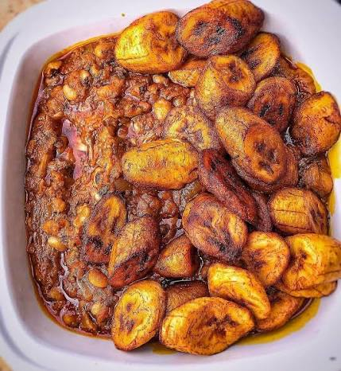

Gobe (Gari and Beans)

A classic plate of rich Ghanaian gobe with fried plantains
Gobe (also known as gari and beans) is an incredibly satisfying, protein-packed Ghanaian classic. It consists of soft, slow-cooked black-eyed beans mixed with a rich, savory palm oil sauce, topped with dry, crunchy gari (roasted cassava flakes), and served with sweet, caramelized fried ripe plantains. It is the ultimate comfort food and a heavy lunchtime favorite across the country!
Ingredients
- 2 cups of black-eyed beans
- 1 cup of red palm oil
- 1 medium red onion (sliced)
- 2 cloves of garlic (minced, optional)
- 1-2 tablespoons of blended pepper or ginger (optional)
- 1 cup of gari (roasted cassava flakes)
- 2 ripe plantains (yellow or slightly spotted black)
- Vegetable oil (for frying plantains)
- Salt (to taste)
Steps
- Wash the black-eyed beans thoroughly. Place them in a pot with plenty of water and bring to a boil. Cook until the beans are completely soft and tender (about 45 to 60 minutes). You can add a pinch of salt toward the end.
- While the beans are cooking, prepare the palm oil sauce. Heat the palm oil in a separate pan on medium heat. Add the sliced onions and sauté until soft and fragrant.
- If using garlic or ginger/pepper paste, add it to the palm oil and cook for about 3 minutes. Season with a pinch of salt.
- Once the beans are fully cooked, drain any excess water. Stir the warm, cooked beans directly into the seasoned palm oil sauce (or serve them side-by-side) so the beans absorb the rich palm oil flavor.
- To prepare the sweet plantains, peel the ripe plantains and slice them into diagonal chunks. Sprinkle with a tiny pinch of salt.
- Heat vegetable oil in a frying pan and fry the plantain slices until they are golden brown, sweet, and caramelized on both sides. Drain on a paper towel.
- Assemble your plate: Scoop a generous portion of the oiled beans, sprinkle a layer of dry gari right on top, and arrange your sweet fried plantains on the side!